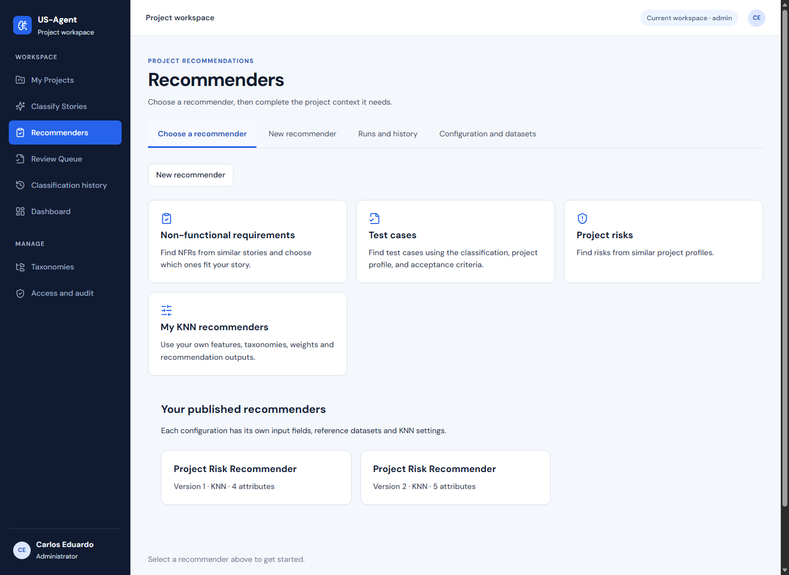
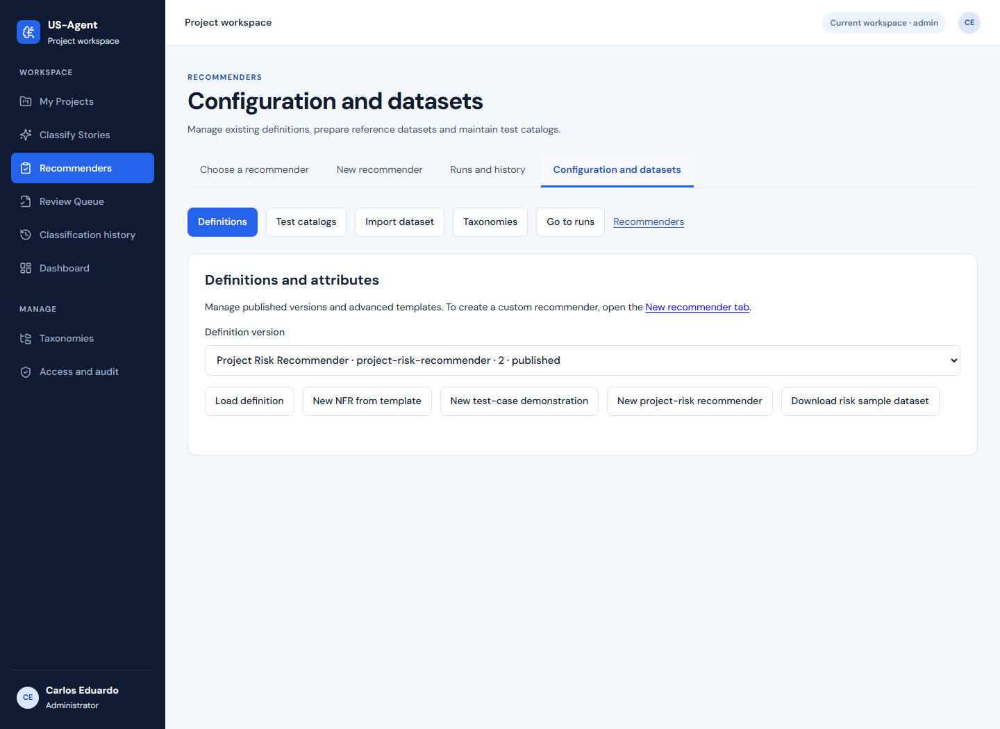
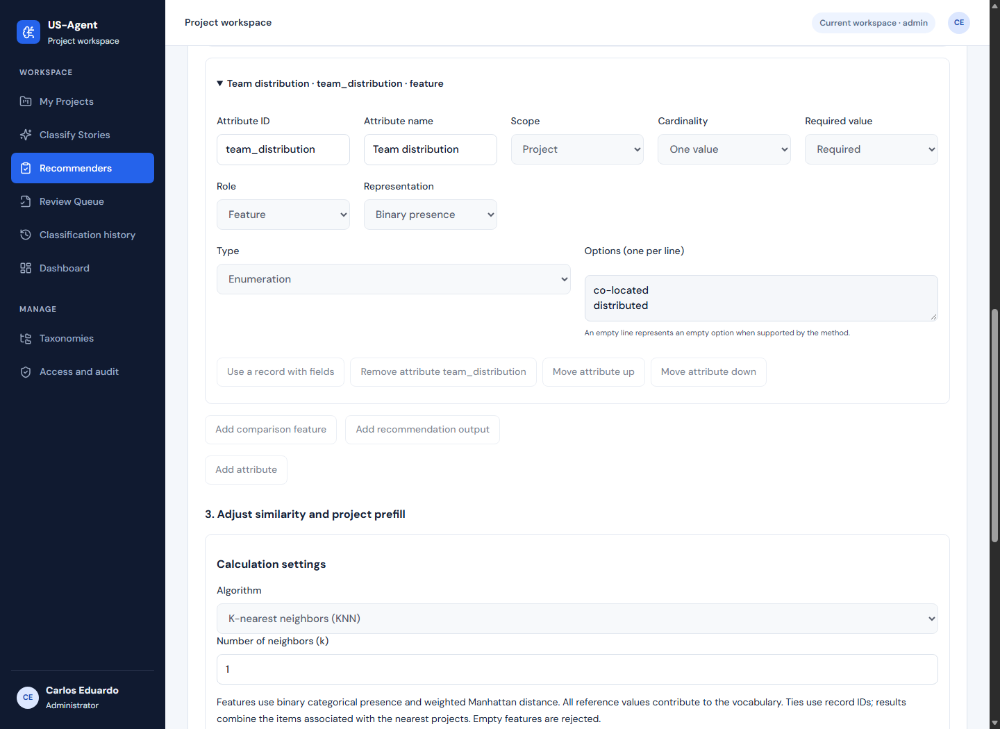
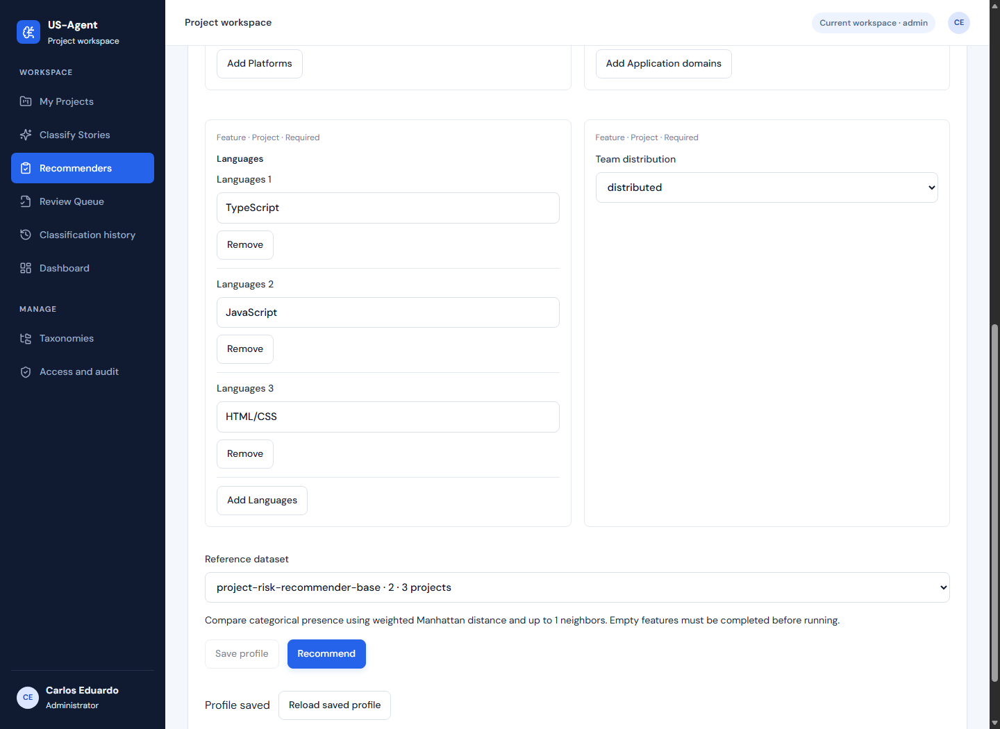
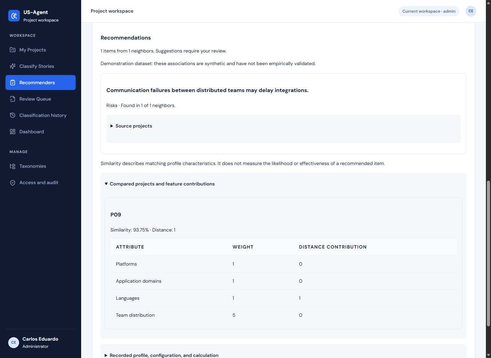
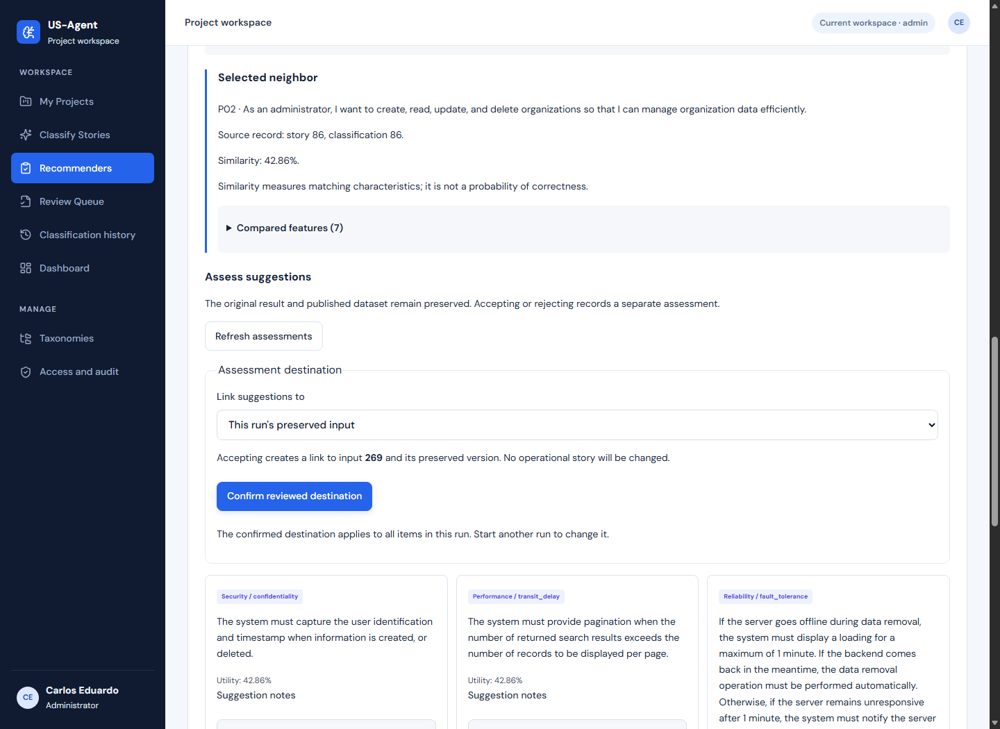
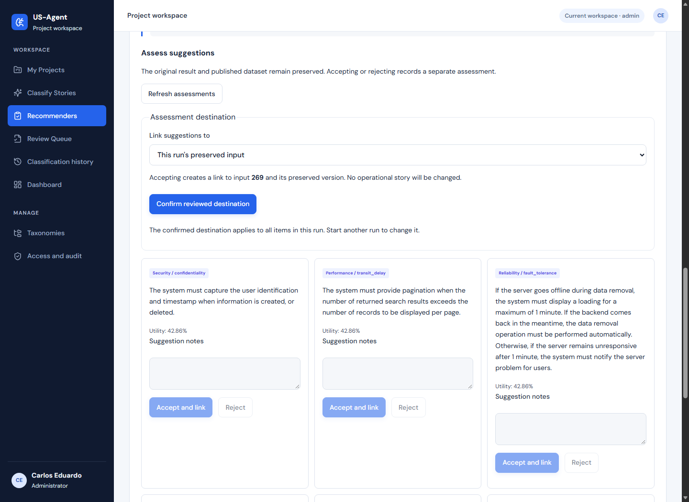
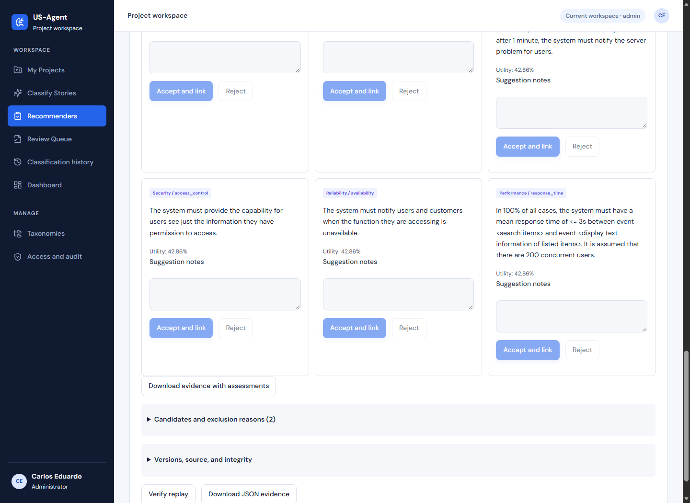
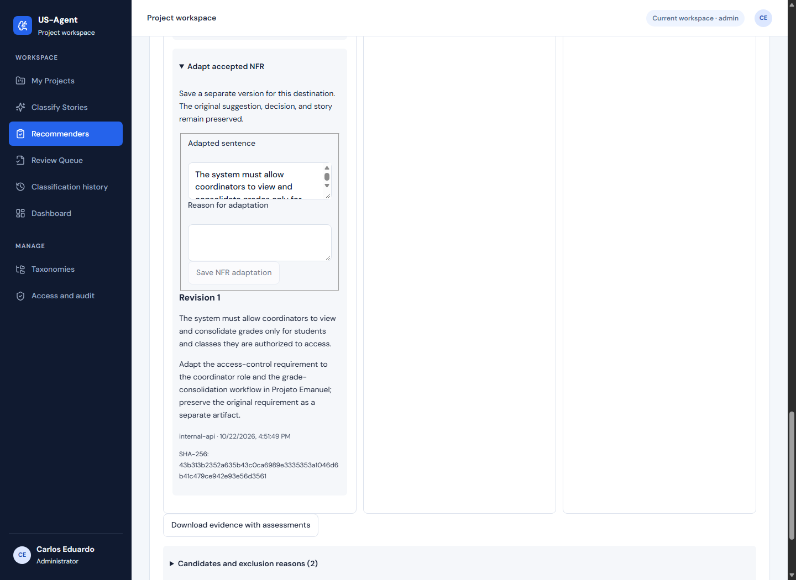
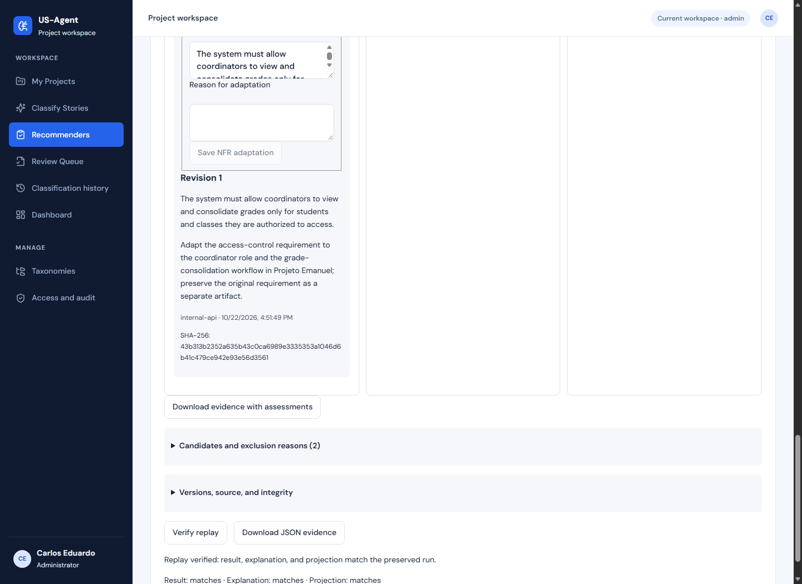

O que abrir, onde clicar
e o que deve aparecer
Siga os passos de 1 a 11, na ordem. Mantenha este guia aberto e use os links “Abrir” para trabalhar em outra aba da aplicação. No HTML, todos esses links reutilizam a mesma aba.
Você vai mostrar uma configuração pronta, executar duas consultas de riscos, aceitar e adaptar um RNF e baixar a evidência. As configurações e bases já foram publicadas: não é necessário criar, importar ou publicar novamente.
Este roteiro de 4min30 apresenta a configuração já criada. Ele não filma a criação/importação ao vivo. A diferença está indicada para você não narrar uma consulta como se estivesse criando uma publicação naquele instante.
Faça a primeira leitura sem clicar nos botões de aceitar ou salvar. Reserve essas ações para a apresentação: elas ficam registradas.
Conferido em 23/10/2026, 08:13 · horário de Fortaleza
Os prints são capturas locais da interface efetivamente publicada, carregando dados de produção em modo de leitura. Não são mockups. O login pessoal não foi testado. Nesta captura não foram criadas execuções, decisões ou adaptações em produção.
O projeto é Information Resources Web Project. Os riscos e a distribuição das equipes são ilustrativos; os perfis técnicos vêm de P01, P09 e P03. A etapa RNF usa a história 269 do Projeto Emanuel e referências do P02.
Clique em qualquer print para abrir a imagem em tamanho completo no HTML.
Mostre o que a ferramenta oferece
Abrir Recommenders ↗- Abra o link desta etapa. Entre com seu login habitual se aparecer a tela de acesso.
- Aponte para Non-functional requirements, Test cases e Project risks, nesta ordem.
- Fique nessa tela. Você não precisa clicar em Test cases; este roteiro executará riscos e RNFs.

Abra a configuração que já está publicada
Abrir Configuration and datasets ↗- Abra o link desta etapa e clique em Definitions, se essa aba não estiver selecionada.
- No campo Definition version, escolha Project Risk Recommender · project-risk-recommender · 2 · published.
- Clique em Load definition.
- Confira ID = project-risk-recommender, Version = 2, Name = Project Risk Recommender e State: published.

Mostre o campo que influencia a comparação
Continue na mesma página da etapa anterior.
- Continue na mesma página. Role até Attributes (5).
- Clique no título Team distribution · team_distribution · feature para expandir.
- Aponte para Role = Feature e para as opções co-located e distributed.
- Role mais abaixo até Calculation settings. Confira Number of neighbors (k) = 1 e Weight for Team distribution = 5. Os outros três pesos são 1.

Execute a consulta com equipe distribuída
Abrir consulta de riscos já preenchida ↗- Abra o link desta etapa. Ele carrega a versão 2 e o perfil do Information Resources Web Project.
- Confira Platforms = Web; Application domains = Information resources; Languages = TypeScript, JavaScript e HTML/CSS, em três valores separados.
- No campo Team distribution, selecione distributed.
- Em Reference dataset, confira project-risk-recommender-base · 2 · 3 projects.
- Clique uma vez no botão azul Recommend e espere a execução terminar. A página abrirá o histórico com seu resultado; role para baixo até Recommendations.

Mostre por que o resultado veio do P09
Continue na mesma página da etapa anterior.
- No resultado que acabou de abrir, clique em Compared projects and feature contributions.
- Mostre P09, Similarity: 93.75% e Distance: 1.
- Mostre a linha Team distribution: Weight 5, Distance contribution 0. O projeto de referência tem a mesma distribuição informada.

Mude somente a distribuição da equipe
Reabrir o mesmo formulário de riscos ↗- Abra novamente o link desta etapa para voltar ao formulário.
- Altere somente Team distribution para co-located. Confira que definição e base continuam na versão 2.
- Clique em Recommend e espere. Role até Recommendations.
- Abra Compared projects and feature contributions. Mostre P01, Similarity: 100% e Distance: 0.
Abra o RNF e mostre a referência
Abrir a execução RNF preparada para você ↗- Abra o link desta etapa. Ele mostra uma execução já preparada; você não precisa preencher uma história nem executar o classificador.
- Role até Selected neighbor.
- Mostre P02 e Source record: story 86, classification 86. Esta consulta recomenda RNFs para “Como coordenador, quero consolidar notas dos alunos.”

Confirme onde a decisão será registrada
Continue na mesma página da etapa anterior.
- Continue na mesma execução. Role até Assess suggestions.
- No campo Link suggestions to, mantenha This run's preserved input.
- Clique no botão azul Confirm reviewed destination.
- Espere aparecer Confirmed destination. Não selecione Selected US-Agent story.

Aceite o RNF certo
Continue na mesma página da etapa anterior.
- Role até o cartão com a etiqueta Security / access_control. Ele fica na segunda linha de sugestões no layout desktop mostrado.
- Confira a sentença: The system must provide the capability for users see just the information they have permission to access.
- No campo Suggestion notes desse cartão, escreva: Suitable for access control over grades; adapt to the coordinator role.
- Clique em Accept and link dentro desse mesmo cartão. Não use o botão de outro requisito.

Escreva e salve a adaptação
Continue na mesma página da etapa anterior.
- No cartão Security / access_control que você acabou de aceitar, clique em Adapt accepted NFR.
- Apague o conteúdo de Adapted sentence e cole o primeiro texto abaixo.
- Em Reason for adaptation, cole o segundo texto abaixo.
- Clique em Save NFR adaptation e aguarde Revision 1 aparecer com a nova sentença.
The system must allow coordinators to view and consolidate grades only for students and classes they are authorized to access.
Adapt the access-control requirement to the coordinator role and the grade-consolidation workflow in Projeto Emanuel; preserve the original requirement as a separate artifact.

Verifique o replay e baixe a evidência
Continue na mesma página da etapa anterior.
- Continue na mesma execução RNF. Role até o botão Verify replay, no final do resultado, e clique nele.
- Espere Replay verified: result, explanation, and projection match the preserved run. Os três indicadores devem mostrar matches.
- Suba um pouco até Download evidence with assessments e clique para baixar a execução com o aceite e a adaptação.
- Finalize mostrando o endereço https://us-agent-api.vercel.app. Explique que o acesso usa uma conta autorizada.

Se algo não aparecer como no print
| Situação | O que fazer |
|---|---|
| Apareceu a tela de login | Entre com seu usuário e senha habituais e abra novamente o link da etapa. |
| A lista de versões está vazia | Confira o workspace default, aguarde carregar e recarregue. |
| O resultado não é P09/P01 | Confira versão 2 da definição e da base, os três valores de linguagens, domínio, plataforma e Team distribution. |
| Accept and link está desabilitado | Conclua o passo 8: Confirm reviewed destination. |
| O RNF já foi aceito/adaptado | Você já realizou esta ação. Para repeti-la, abra o formulário RNF do Projeto Emanuel, selecione a definição/base e gere uma nova execução. O link está abaixo. |
| Replay não verificou | Não diga que passou. Confira a mensagem antes de continuar. |
Abrir formulário RNF para uma nova execução ↗
Selecione Non-functional Requirement Recommender, base nfr-recommender-base · 1, confira a história e o par Registry / Retrieve data e clique em Run recommendation. Use a nova execução somente se precisar repetir a aceitação/adaptação.
O que está pronto
A execução RNF reservada foi consultada nesta revisão: destino ainda não confirmado, zero decisões e zero adaptações. O print de adaptação e o print de replay usam a execução separada de ensaio, já concluída. Seus próprios cliques nos passos 8 a 10 salvarão uma nova decisão e adaptação na execução reservada.
Relatório de origem e consultas: capturas-verificadas.json. A conferência visual percorreu a interface publicada em ambiente local com proxy de leitura. A autenticação do preview local foi desativada; as APIs de produção foram consultadas pelo servidor local com a credencial técnica, sem expô-la no navegador. Ações de gravação foram bloqueadas no preview.